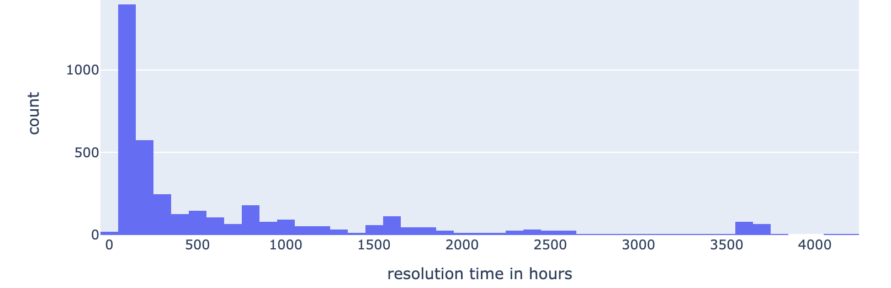
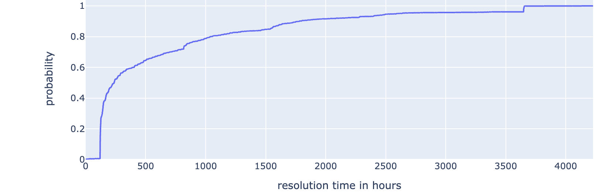

Description
This recipe computes the duration of an event of interest in time-stamped data. Such time-stamped data often arises with process data, but in general, this recipe can be applied to any machine-generated dataset with a timestamp and an event of interest. The git repository for this recipe contains an example of process data from an IT help desk. The event of interest is the resolution of the ticket. The duration is associated with the time interval between the opening of the ticket and the resolution of the ticket.
Examples
- Hospital Billing Event Log : This dataset is related to events generated from a hospital billing system. A patient’s journey through the hospital can be traced. See work using this dataset, for example this paper for traces that may be of interest. The duration between two states of the trace, not necessarily the start and terminal state of the trace may be of interest to health care IT type applications wanting to baseline and monitor key performance indicators of hospital operations.
- Sensor Data to monitor activities of daily living : Some population groups, such as professional athletes, the elderly, or the sick may have wearable sensors to monitor their activities. Blood sugar readings from a continuous glucose monitor are another example. The event of interest may be an activity like exercise or falling for seniors. For sportsmen, it may be the time taken to perform a task that is part of their training routine. For the blood sugar monitoring example, an event of interest may be a time for which the blood sugar level remains within an acceptable range.
- Data from a manufacturing process : A manufacturing process may consist of several discrete sequential manufacturing steps. The process data is a stream of timestamped events as they are completed. An event of interest may be the time to perform a particular step.
Task Data Description
The key elements associated with a data description for this recipe include:
-
The data attributes associated with the event duration
-
The rationale to compute the event duration from these attributes.
Task Solution Description
See the ITSM example in the repository, for a reference implementation of this recipe. This implementation follows the template discussed in the overview section. Specifically:
-
The attributes that are relevant to the use case are first defined.
- Inadmissible values for the attributes are defined first and processed next. In this implementation, inadmissible values are removed (processing choice), but this can depend on the noise type and a different processing choice can be made. For example, if an attribute is missing, an imputation for the missing value can be made.
-
Suitable transformations are made to the dataset. In this case, a new attribute called resolution time was defined.
- At the end of the transformation step the dataset is ready for report generation. The report generation step generates the required visualizations.
See the figure below for an example of a visualization produced through this recipe. The diagram shows a histogram that captures the ticket resolution times for a particular support group in an IT help desk. For this group, the plot shows that ticket resolution times cluster into groups. Most tickets are resolved in \(1000\) hours or so. There are small clusters of tickets that take longer to resolve that the organization may be looking to assess and improve. There is a cluster of tickets that take between \(1500\) to \(2000\) hours, a cluster centered around \(2500\) hours, and a cluster between \(3500\) to \(4000\) hours.

Related Recipes
This recipe computes the time interval associated with an event. A related recipe could compute another metric associated with an event (Event Metric Computation). For example, an online store may be interested in weekly sales revenue. The event is the sales activity (between two consecutive Sundays, for example) during a particular business week. For each business week, sales revenue can be computed. This is the metric of interest. I have used this recipe in my research. This work was based on the retail dataset from the UCI machine learning repository. Computing the probabilistic view of event duration (Event Completion Probability) is a related recipe. This recipe would help us obtain a probabilistic estimate of the event duration. This could be useful for example to set customer expectations and for decision-theoretic models using the event. The figure below illustrates a probablistic plot for the ticket resolution data. This plot can be used to estimate the probability that a support group will resolve an assigned ticket within a specified period (number of hours). The \(x\) axis represents the time to resolution. The \(y\) axis represents the probability that the ticket would be resolved within a particular number of hours. This could be useful for organizations to set up service level agreements for support groups, the time a support group staff member may be available to work on the next assignment. In a manufacturing or healthcare setting, this recipe could be used to summarize the time to completion of a task or a phase of a treatment process.

This and other recipes will be added to this site in due course.
If your use case needs to analyze event durations or develop temporal event-based models, this recipe could be useful. If you are looking to solve such problems, do get in touch .